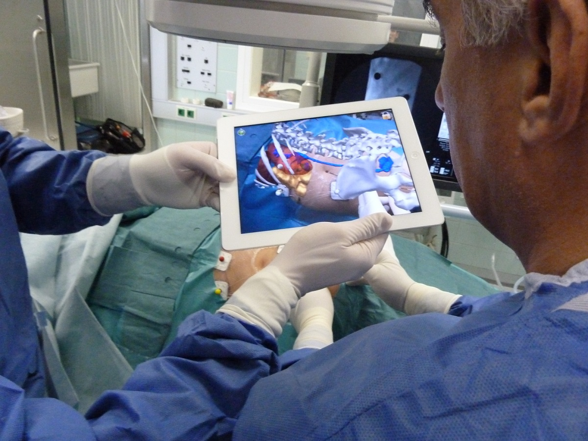
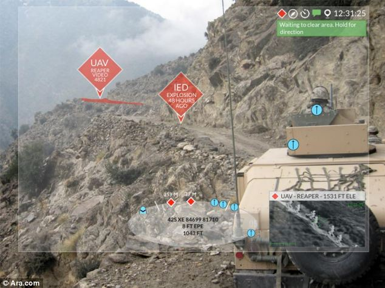
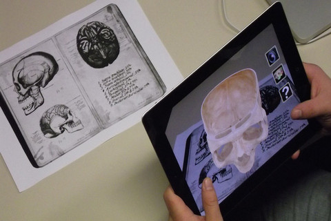
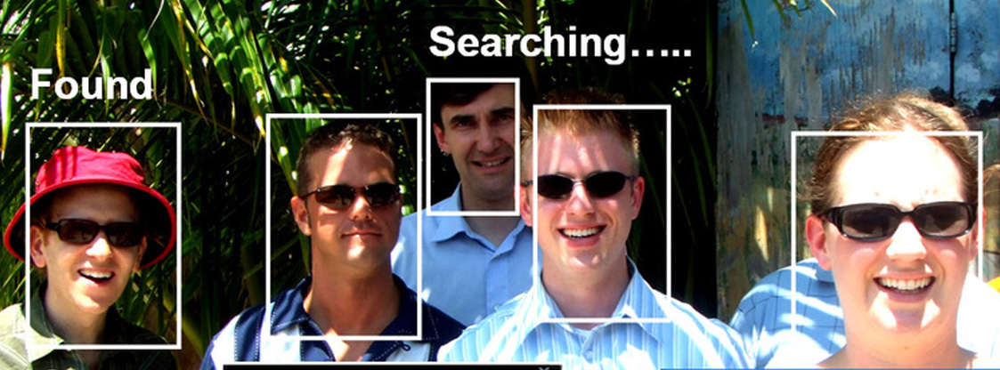

Augmented Reality (AR) works to blur the line between reality and imagination. AR takes what we experience in the real world, and enhances it using computer-generated environments. Using a variety of technological innovations such as haptic feedback, graphics, sounds, 3D camera tracking, and smells, AR takes things we can hear, see, smell, or feel and “augments” it in order to create a revolutionary new experience for those using it.
Imagine, for a minute, that you are walking down the street with a pair of sunglasses on. However, these are not your typical prescription sunglasses.Instead, they are crammed with high-tech sensors and a computer that are working together at projecting various real-time information onto the glasses regarding your surroundings. You turn and look at a specific building, and your glasses project information regarding that building, and other buildings like it in the near vicinity. A small camera and a multitude of sensors work in unison to gain an artificial sense of “awareness” of your surroundings, so that your AR technology can provide you with live information about anything you look at, whether it be a wild animal, a house, or a street sign; you don't have to work with AR, AR works with you
Previously, AR tech has been limited to gaming, at least for mainstream audiences. Games such as Pokemon GO and Ingress have adopted this technology into smartphones, but ongoing research and development hints at broader applications.
Medical Applications: Augmented Reality has the potential to be incredibly useful in the coming years in the field of medicine. AR is the perfect tool for a variety of medical causes: it can be used as a supplement for students studying to become doctors. Students can learn about their field of medical study using AR that projects models of the various concepts they work with. On the other end of the spectrum, AR can be further utilized by expert doctors to practice and review difficult surgeries, so that when it comes to the real thing they are prepared and ready. As a matter of fact, products such as Accuvein are rapidly taking steps on making these applications a reality. Accuvein uses scanning and AR technology in order to project the network of veins, arteries, and other fluid vessels in a certain part of the body directly on top of the skin, making it easier for doctors and nurses to find veins for blood-drawing and other tests. Vipaar, another AR-based medical solution, uses video projected onto mediums such as google glass in order to help doctors go through surgeries with an extra set of eyes helping them along the way.
Military Applications: Augmented Reality has already been used in fighter jets and other military equipment, and is now being used for extensive training facilities. Interactions between those in battle and those at home will be more efficient than ever, with pilots being able to take in information simply through hands-free headsets or projections onto screens. AR can also be used to prevent worst-case scenarios out in the battlefield, by providing pilots with immediate real time data regarding their surroundings. Battle and training modules using AR are also falling into place, allowing soldiers to gain more information regarding their surroundings, whether in boot camp or in the battlefield. A greater awareness allows our soldiers to be more prepared for imminent threats than ever before, with life terrain-based awareness. Although the virtual systems seen in video games such as HALO or Call of Duty are still years away from reality, AR is helping us as a society to get there.
 Education Applications: Augmented reality ushers in a whole new era of tech-savvy methods of learning. Homework can take on a brand new perspective, with students taking pictures of problems they are unable to do, and receiving immediate feedback on what he or she did wrong. In-class lessons will get much more interactive, with students being able to “look around” digital objects in a way that is not possible with normal computers. Moreover, they can harness their creativity to build digital objects and learn topics in science and engineering without worrying about materials. Outside of school, learning can be increased even more with concepts that can be as simple as taking a picture of an object one wants to learn more about, and immediately getting live info regarding the object and its background.
One of the main concerns related to augmented reality is privacy, which is also the cause of shutdown for many AR products. For example, the much hyped Google Glass was discontinued due to lingering concerns of recording private conversations. The fact that it had a camera, made it not only vulnerable to various security threats, but also a threat to others’ privacy. It only took one photo of a malicious QR code to make the entire device infected with a virus. The issue of privacy mainly stems for the fact that the augmented reality device is directly seeing what you can see, except it can record or and theoretically have a photographic memory. In addition, augmented reality devices can process the data from the cameras since it can connect to the internet. While all of this can have the potential to be used for good, there remains a chance of abuse.
Lastly, another major concern regarding AR is that it can cause a distraction, as the device overlays information into your sight. For example, when driving part of your vision may be cut off, as a result of the data and visualization on on screen. While AR is a promising, one must take into the consideration of the many risks that come with it before using this technology.
Google Glass is very similar to a pair of glasses, except it has an onboard processing unit with various different sensors paired with the Glass Operating System, and a mini projector to project information on the actual glass part of Google Glass. This projection is equivalent to viewing a 25 inch screen from roughly 8 feet away. Glass responds to natural voice commands to enable a hands free way to control the device.
The HoloLens is a head-mounted display, with a much more powerful processing system, that enables true augmented reality for the user. The user looks through tinted glass with projections on it, to create the augmented reality effect. HoloLens has 6 different cameras to that it can accurately track your motion and depth in your environment; it uses this data to project data/visualizations through its tinted visors. The HoloLens is great at handling tasks like voice recognition, gesture recognition, and spatial mapping, as it’s computing power is greater that the average laptop.
Glass was more of static projected screen so that your eye could read data, or notifications. It was initially more meant as an informative display, that is attached to your glasses, but once Google release the Mirror AP, third party developers were really able to create more application for the device. Many new applications hit the app store for the Glass, for example there was real time language translation apps, and various social networks reworked for Glass. In addition, Glass served many other one of a kind health care applications, such as storing electronic medical records, capturing the user's retinal informal for eye doctors, and even assisting surgeons in training.
HoloLens, has put a big emphasis on industrial application, on its take of and augmented reality headset. The fact that the HoloLens can track movement, depth, and essentially map out a 3D space, this really opens up the possible applications. The Hololens can digitally embed tracked virtual objects in the real world visible via the headset. This means that 3D designers can view their models in say their office and walk around it. Another application, is repair work, rather than having a plumber come to your house, you get their video stream embedded into your field of vision, and they can point out what you need to do. Lastly, the HoloLens has one of kind gaming possibilities. Rather than being limited to a TV screen, the HoloLens captures data from your environment, to embed the game within environment.
Google Glass received a great deal of criticism and legislative action due to privacy and safety concerns. On January 15, 2015, Google announced that it would stop producing the Google Glass prototype. Costs began running too high, and development was beginning to slow down greatly as Google’s focus shifted to other aspects of virtual innovation.
Hololens is an ongoing project run by Microsoft in order to further develop the Augmented Reality field. Because of the myriad of potential applications, it can be seen as a representation of where AR is going in the future. Microsoft is using Hololens as a medium to truly allow the AR market to take off and become a daily part of our lives. Although still in very minimal stages, Hololens has the potential to spur the creation of a plethora of different AR devices in our near future that help to improve our day- to - day lives. As of now, it's a 3000 dollar piece of equipment still in development.